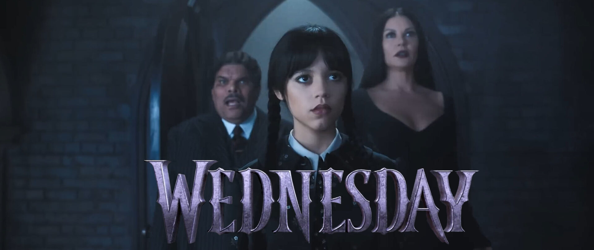

Role: Wednesday
Jenna Marie Ortega (born September 27,
2002) is an American actress. In the
Netflix comedy horror series Wednesday
(2022), Ortega played the titular role
of Wednesday Addams, which she called a
"new chapter" in her career. She later
called production of season one "the most
overwhelming job" she had ever had and
spoke about being in a constant state of
confusion and stress over the direction
of the series and character. She
was nominated for the Golden Globe
Award for Best Actress – Television
Series Musical or Comedy.
Role: Tyler Galpin
Hunter Doohan (born January 19, 1994)
is an American actor. He is known for
his roles in the television series Your
Honor and Wednesday. After high school
he took up an internship at Elizabeth
Barnes Casting in Los Angeles before
working in a variety of day jobs including
background extra, waiter, and Universal
Studios tour guide while studying acting
and auditioning for parts. Doohan's
breakthrough role was playing the younger
version of Aaron Paul's character Warren
Cave in the first season of the Apple TV+
series Truth Be Told, followed by appearing
as Adam Desiato in Your Honor.
Role: Enid Sinclair
Emma Myers (born April 2, 2002)
is an American actress. Myers started
acting as a child actress in 2010,
making her debut in the TV series,
The Glades.She started professionally
acting at the age of 16. Myers appeared
in Southern Gospel (2020), A Taste of
Christmas (2020), and Girl in the
Basement (2021). She had her breakthrough
when she starred in the Netflix series
Wednesday in 2022, playing Enid Sinclair
alongside her co-star Jenna Ortega,
who played Wednesday Addams.